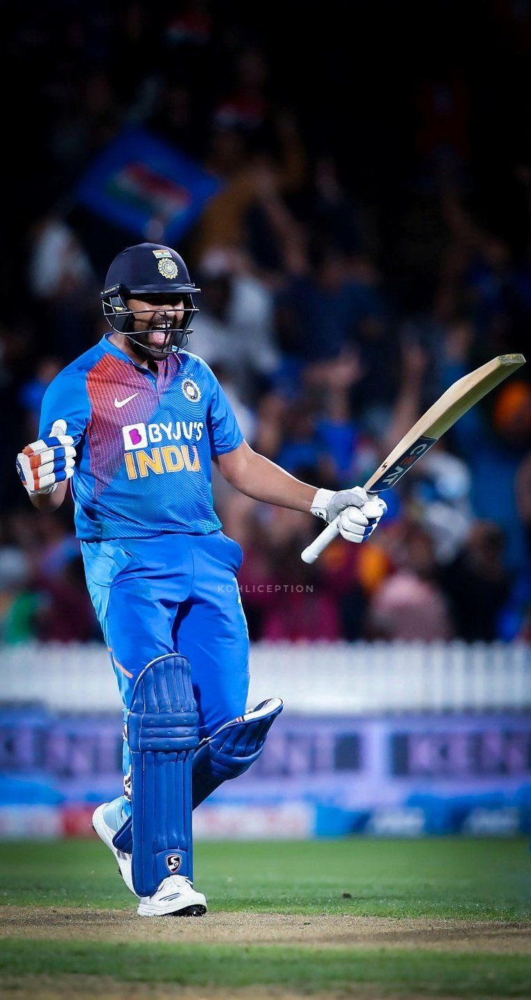

Captain of India
Rohit Sharma, fondly known as "The Hitman," is a name that resonates with every cricket enthusiast. With a career spanning over a decade, Rohit has etched his name in the annals of cricket history, leaving an indelible mark with his incredible talent and impeccable records.
Born on April 30, 1987, in Bansod, Nagpur, Rohit's journey in cricket began at a young age. His passion for the sport was evident from the start, and under the guidance of his coaches and mentors, he blossomed into a formidable cricketer.
Rohit Sharma's cricketing career is a testament to his dedication and brilliance. From his debut in 2007 to leading the Indian cricket team in various formats, he has consistently delivered exceptional performances. Some of his career highlights include:
Rohit's batting style is a blend of elegance and aggression. His immaculate timing, ability to find gaps effortlessly, and a wide array of strokes make him a true batting maestro. His mastery of the pull and hook shots is particularly a treat for cricket fans.
Rohit Sharma's leadership qualities are well-recognized, especially during his captaincy stints with the Mumbai Indians in the IPL. Under his guidance, the team has clinched multiple championships, solidifying his status as a captain par excellence.
Rohit Sharma's list of records and achievements seems never-ending. From becoming the fastest to reach 1,000 runs in T20 internationals to his numerous match-winning performances, he has consistently redefined what's possible in cricket.
Beyond the cricketing field, Rohit is known for his humility and commitment to social causes. He actively participates in various charitable activities and has become an inspiration for countless young cricketers.
Rohit Sharma's legacy in cricket is secure. He has not only been a cricketing sensation but also a source of pride for the nation. As fans, we eagerly await every "Rohit Special" and cherish the moments he brings to the game.
“Don't be afraid of being different, be afraid of being like everyone else.”
Rohit Sharma